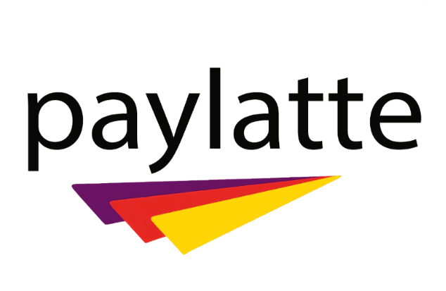

<div class="container-fluid tele-logo ">
   
  <div class="row">
<div class="col-12 tele-sec">
  <nav>
      <input  type="checkbox" id="check">
      <label for="check" class="checkbtn">
          <i class="fas fa-bars"></i>
      </label>

      <label>
      
       
  </label>

 

<ul>
     
  <!-- <li> <a routerLink="/user">User's</a></li>
  <li> <a [routerLink]="'/credits'"  >Credit's</a></li>
     <li> <a routerLink="/transactions" >Transaction's</a></li> 
     <li> <a [routerLink]="'/refunds'"  >Refund's</a></li> 
     <li> <a [routerLink]="'/bills'"  >Bill's</a></li>
  <li> <a [routerLink]="'/repayments'"  >Repayment's</a></li> -->
  <li> <a [routerLink]="'/charge'"  >Charge</a></li>
  <li> <a [routerLink]="'/refund'"  >Refund</a></li>
  
  

  

  
             <!-- <button class="btn btn-success" routerLink="/login" *ngIf="!loggedIn" >Login</button> -->
          
          <!-- <button class="btn btn-success" (click)="logout($event)" *ngIf="loggedIn" id="log" >Logout</button> -->
      </ul>
  </nav>
  </div>
  
</div>
</div>


<router-outlet></router-outlet>

<app-footer ></app-footer>


<!-- <app-userscrud></app-userscrud> -->